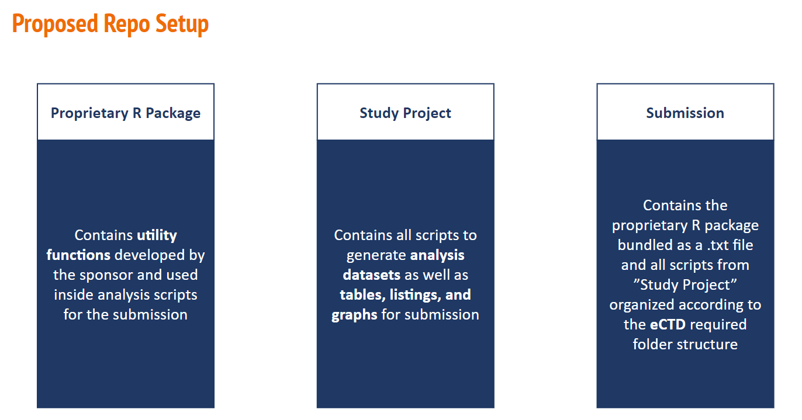

- Amanda Martin
- Andrew Borgman (Bristol Myers Squibb)
- Ben Straub (GSK)
- Heidi Curinckx (Johnson & Johnson)
- HyeSoo Cho (FDA)
- Joel Laxamana (Roche/Genentech)
- Kui Schen (Bayer)
- Lei Zhao (Roche/Genentech)
- Nan Xiao (Merck)
- Nate Mockler (Biogen)
- Ning Leng (Roche/Genentech)
- Paul Schuette (FDA)
- Robert Devine (Johnson & Johnson)
- Saghir Bashir (Argenx)
- Sam Parmar (Pfizer)
- Sean Healey (Pfizer)
Pilot 2 Update
Eric Nantz provided the following update:
- He has solved the filtering bug and has verified the app is working correctly with additional testing.
- He is incorporating ADRG material into the intro guide
- Paul suggested adding a list of steps and has offered to discuss details offline.
- Ning will work with Bev to make sure we are good to go with the gateway
- The Pilot 2 re submission is set for 9AM on Friday, April 21, 2023. Joe will schedule the meeting (Bev, Eric, Hye Soo, Paul, Ning)
Pilot 3 Progress Update
Joel Laxamana provided the following update.
- All 5 ADaMs now generated and in review.
- Per development steps, we have noted discrepancies or findings when comparing our Pilot 3 ADaMs with the original Pilot 1 ADaMs. You may see these noted in our Wiki here : https://github.com/RConsortium/submissions-pilot3-adam/wiki/QC-Findings .
- Minor updates are being made to clean up code, updating our variable labels appropriately and updating the ADaM specifications (define) to meet CDISC guidance as we go through our routine P21 checks.
- We are also currently developing our ADRG based off of the Pilot 3 specifications we are reading into P21. We plan to use the P21 ADRG as a base, then we will add in information similar to that of Pilot 1 for complete instructions prior to submission.
- As we finalize both the define and the ADaMs, we are also developing a batch run code to run all of our ADaM and TLF scripts, with that we are looking into implementing dependency recognition using a package called {targets} (e.g. before ADAE is run, checks latest ADSL code has been run first).
- Additionally, we are rerunning all TFL scripts from Pilot 1 and re-sourcing the Pilot 3 data.
- Once the above is finalized, we will do a batch run, check against P21, then bring everything over into our eSubmission repo. We have made contact with Roche’s Regulatory function who will help support the preparation of our eSubmission in eCTD structure.
Current Project workflow discussion as seen in Pilot 1:
- Upon reviewing Pilot1’s work and the R4CSR guidance they have followed, we see the current flow suggests the use of 2 repos : 1)Project repo & 2)Submission repo
- In the project repo, this includes the project analysis R scripts (ADaMs and TFLs) and R utility functions within the same package.
- 14.2.2 programs
- Folder path: ectddemo/m5/datasets/ectddemo/analysis/adam/programs/.
- r0pkgs.txt: contains all internally developed proprietary R packages. Other .txt files: each contains R code for a specific analysis.
- They also suggest using .RMD files as the source analysis scripts, which are then converted to .R/.txt for submission.
- Then all .txt are brought over to the Submission repo to deliver to Regulatory for eCTD structure and formal submission to the FDA portal.
In Pilot 3 our project flow emulates more of the usual project work we would see in our companies.
For instance, our source code will just use plain .R instead of .RMD as source analysis code. Especially for ADaMs, it make more sense to just start in .R scripts.
For the most part Pilot3 will follow the same submission process as Pilot1, but the minor difference will just be our project flow. I.E., Pilot 3 will separate the Utility functions from the Project analysis scripts into different repos. It makes more sense to treat the study specific utility functions as separate package, similar to how we call on other R packages from CRAN or other git repositories, where then the project analysis repo scripts will call on the aforementioned study specific utility functions package. This is still in line with the R4CSR guidance in section 14.3
Following this approach, makes it clear from a study perspective where the utility functions are being called from, where the project analysis scripts are stored and developed and where the submission will be. For illustration purposes we have this graphic (Thanks, Thomas Neitman!):

Proposed Pilot 3 Repo Setup
Overall, to our Health Agencies, the single source of truth will of course come from our ‘Submission’ repo, where they may not need all of the details of the study project flow steps. We just wanted to be able to discern that R packages should be kept in their own packages and project analysis work should not be stored as a package.
POST Meeting notes/actions from R Consortium Submissions WG (07Apr2023) :
- Per Paul Schutter, Pilot 3 needs a link to the ‘FREE’ P21 version that the Pilot 3 team should be using. Paul to share link with Joel. We should also include SDTM in the P21 run, but just mention in the ADRG that we will not be updating or fixing the SDTMs due to any P21 issues to follow the same approach as Pilot 1. Though Pilot 3 is mainly focused on ADaMs, we do plan on fixing the P21 issues the best we can and noting discrepancies compared to the CDISCPILOT data.
- Need new repo from submission_wg to store the utility functions into. Joe R, could you help us with this?
- For the study project repo set-up, there are example template repos that can be followed. Pilot 3 team to look into this.
- Targeting mid-June 2023 to wrap-up submission.
- Link to all Pilot 3 members, for Eric to include in Submission WG webpage : https://rconsortium.github.io/submissions-pilot3-adam/main/
Pilot 4
Eric Nantz gave a brief update:
- Eric is starting to build a team and already has some volunteers
- The effort will focus on container technology
- Paul Schuette will reach out within the FDA to find an FDA participant for this group
- Paul noted that anything having to do with servers would necessarily involve the use of contractors and have to have a budget.
- There may be a way to have the container run on a laptop and thus avoid the complications caused by servers. *Ning Leng asked Paul if there are any other groups within the FDA that might be interested in pilots. Paul replied that the guidance he has received from management is to hold off on this for the time being.
ASA Webinar
JBR Informed the WG that the ASA New Jersey Chapter has contacted him about doing a webinar on the Submissions WG. The email below outlines a list of options.
- The WG was enthusiastic about doing a robust webinar with multiple talks sometime after the Pilot 2 submission in June.
- Paul said that he would like to participate and asked if other ASA members could attend. Paul noted that he has had requests to speak from pharma companies, but it is difficult for FDA speakers to speak to individual companies without committing to speak to all companies.
- The WG would like to co-brand the event as an R Adoption Series Event
March 26, 2023 email from Sciling Ruan
Hi Joe,
It was very nice to speak to you last week and learned about what you do in the R-Submission working group. As discussed, we are very interested in collaborating with you to bring the topic of R-submission to our webinar. I also include our ASA NJ Chapter President Dirk Moore in the loop. Dirk is a faculty member in Rutgers University, and he will also help organize the webinar.
I understand that you will need to discuss this collaboration within your working group. I would like to give more information in case it might be helpful.
The webinar can have one presentation or multiple presentations with different perspectives. So I would be interested to know the tentative presentation titles and speakers.
The webinar can be set in any date and month. We are very flexible. Normally, to accommodate both east coast and west coast audience, we often recommend the time slot of 11:00-12:00 or till 1:00 EDT on a Friday.
We might invite another speaker from a pharma company on their experience with R-submission (if we could identify a good speaker). In that case, the webinar will be two hours with a panel discussion. Will this set up OK with you? Once I have some information to work with, we will follow up with a kickoff meeting including all potential speakers to work out the details. The webinar will use the WebEx platform in Rutgers University. It will be a free event to everyone.
I look forward to hearing from you. If you need more information from me, please let me know.
Best regards, Shiling Ruan
Additional Conferences
In general, the WG is keen about promoting their work after the submission of Pilot 2 and the group discussed possible opportunities for talks alter this year including the R / Pharma conference and possibly and FDA event. The group will discuss this at the next meeting.
The next meeting of the WG will be at 9AM Pacific Time on Friday May 5, 2023.